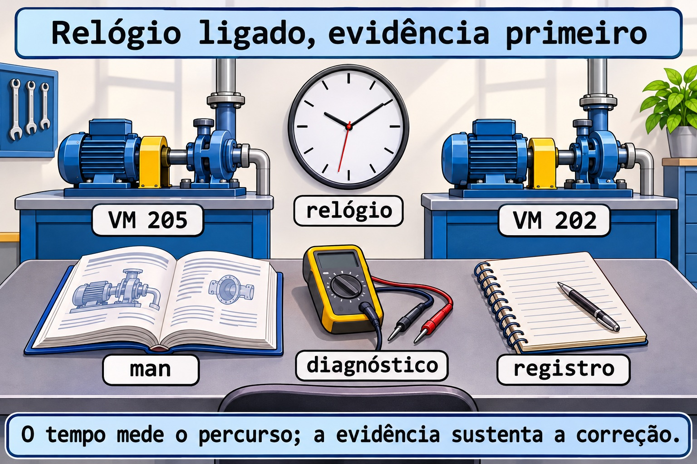
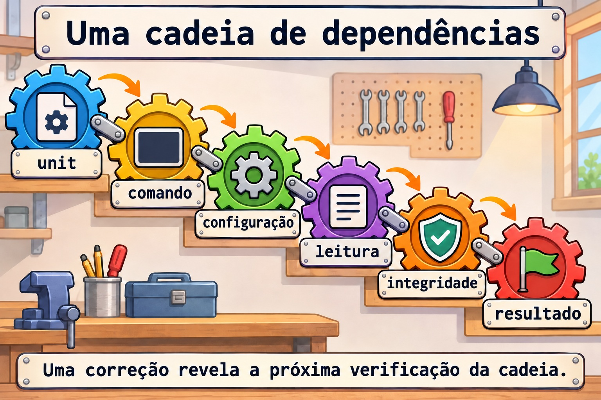

Aula 16.3 · Incidente com relógio
Agora você resolve um conjunto integrado nas VMs 205 e 202 com o relógio ligado. Durante a janela de diagnóstico, use apenas man e /usr/share/doc. A aprovação depende do resultado depois do reboot e da explicação de cada correção.
Núcleo desta aula: a rotina volta quando toda a cadeia de dependências está correta; o incidente termina quando isso continua verdadeiro num boot novo.
| Ficha | |
|---|---|
| Módulo | M16 · Semana de incidentes no Rocky 10, aula 3 de 4 |
| Quando | Semana 22 |
| Ao final | Você investiga uma cadeia de falhas nas duas VMs, registra tentativas e comprova a correção após o boot |
| Pré-requisitos | M0 a M15; noVNC, sudo, backup e diário de bordo |
| Tempo | 60 a 90 minutos; instalação e revisão podem pedir outra sessão |
| Snapshots | m16a3-inicio e m16a3-fim, VMs 205 e 202 |
1 · Aquecimento
Responda sem consultar. Compare com as soluções somente no fim.
- O primeiro erro de uma cadeia consegue revelar todas as causas ao mesmo tempo?
- Quais evidências da base saudável você precisa guardar antes do plantio?
- O que distingue uma tentativa interrompida por segurança de uma tentativa concluída?
2 · Por que importa
Uma rotina local produzia um resultado simples e verificável. Agora falha nas duas famílias. Você recebeu a configuração esperada e uma cópia dos critérios, mas precisa descobrir sozinho quais elos impedem a execução.
O ambiente continua acessível por SSH e noVNC. Nenhum defeito depende de quebrar rede, boot, firewall ou dados de outro exercício. A pressão vem do tempo e da relação entre falhas, sem exigir risco fora da bancada.
3 · Modelo mental
Pense numa oficina com uma bancada por incidente. A etiqueta da bancada delimita onde você pode mexer. O diário guarda as medições; a ferramenta de correção vem depois da medição.


Ponte Windows
| Referência do Windows | Pergunta equivalente no Linux |
|---|---|
| Gerenciador de Serviços | A unit iniciou e pode iniciar no boot? |
| Visualizador de Eventos | Qual evento ocorreu nesta execução? |
| ACL e conta do serviço | O usuário efetivo consegue ler o dado? |
| Procedimento de mudança | Qual hipótese justifica esta alteração? |
4 · O essencial
Uma cadeia para as duas famílias
A bancada se chama m16a3 e usa o mesmo script da 16.2 com o argumento a3. A unit m16a3-cadeia.service executa como student e precisa iniciar no boot. O resultado termina em cadeia.result.
Uma falha inicial pode esconder outras. Corrigir o primeiro erro permite que a próxima validação seja executada. Isso não prova que a primeira correção estava errada.
Contrato de funcionamento conhecido
| Objeto | Estado exigido |
|---|---|
/etc/systemd/system/m16a3-cadeia.service | Unit dedicada, carregada e habilitada |
/usr/local/libexec/m16a3/run.sh | Executor original, sem adaptação para ignorar erro |
/srv/m16a3/config | Uma linha MODE=ok |
/srv/m16a3/conteudo.txt | Uma linha curso-m16-ok, com quebra de linha |
/srv/m16a3/SHA256SUMS | Manifesto original, não recalculado sobre dado errado |
/srv/m16a3/pacote.tar.gz | Tar gzip completo e coerente com o conteúdo correto |
/var/lib/m16a3/cadeia.result | Identificador do boot atual, gravado pela execução |
As permissões iniciais dos arquivos de conteúdo e configuração são 0644, pertencentes a root. A pasta de resultados pertence a student; não transforme a árvore inteira em propriedade do aluno.
Critérios antes do relógio
A checagem lê estado e habilitação, valida o comando carregado, repete verificações como student e compara o identificador do resultado com o boot atual. Ela não corrige arquivos nem reinicia a unit.
O retorno zero significa que todos esses critérios declarados passaram. Ainda falta sua explicação. Um script não confirma que você compreendeu a diferença entre causa e efeito.
A janela de trabalho
Reserve até 60 minutos para diagnóstico, correções e reboot nas duas VMs, além de preparação e revisão. Marque o início e o fim no diário. Não mude o relógio do sistema para medir o exercício.
Durante a janela não consulte soluções, internet ou tutor. Se precisar parar por segurança, registre a pausa e o motivo. Isso conserva uma medição honesta sem premiar uma mudança arriscada.
Decisão de parada
Se aparecer caminho externo à bancada, hostname inesperado ou dúvida sobre o disco correto, pare. O contrato não exige tocar nesses objetos. Restaure o snapshot quando necessário e marque a tentativa como interrompida.


Rocky × Debian
| Camada | VM 205 | VM 202 |
|---|---|---|
| Sistema | Rocky 10, ou Rocky 9 se a CPU exigir a alternativa | Debian 13 |
| Pacotes | dnf e rpm | apt e dpkg |
| Serviços e logs | systemctl e journalctl | systemctl e journalctl |
| Controle adicional | SELinux permanece ativo | AppArmor permanece ativo quando configurado |
| Incidentes deste módulo | Árvores próprias; nenhuma alteração em SSH ou firewall | Mesmo contrato de isolamento |
Decida 1
A base saudável não passa antes do plantio. Quando começa o cronômetro?
| A | B | C |
|---|---|---|
| Imediatamente, para contar também o erro de preparação | Depois de forçar o checador a aceitar | Somente depois de corrigir e medir a base saudável nas duas VMs |
5 · Lab guiado
Use somente as VMs do contrato. Abra o noVNC antes de começar e confirme o backup. Os comandos de Proxmox pertencem ao host; os demais pertencem à VM indicada.
Na 16.1 crie e valide a VM 205 antes de tirar seu primeiro snapshot. Nas outras aulas ela já deve existir. Nunca aplique um rollback a uma VM diferente para recuperar esta bancada.
qm snapshot 205 m16a3-inicio
qm snapshot 202 m16a3-inicioSe a recuperação exigir rollback, pare o exercício, abra o console e use o snapshot de início desta aula. Anote o que perdeu e não confunda restauração com diagnóstico concluído.
qm rollback 205 m16a3-inicio
qm rollback 202 m16a3-inicioPasso 1 · Confirmar o kit e o destino
Palpite: por que duas VMs com a mesma falha ainda exigem duas medições?
Antes do relógio, use a cópia de m16-incidentes.sh validada na 16.2 ou transfira a do pacote por SFTP. Confira o hash contra o manifesto e a sintaxe.
hostname -s
cat /etc/os-release
bash -n ~/m16-incidentes.sh
sha256sum ~/m16-incidentes.shSaída esperada: VM 205 com o Rocky realmente registrado e VM 202 com Debian 13; script intacto nas duas.
Verifique: noVNC aberto, snapshot confirmado e bancada m16a2 já limpa. A 16.3 usa nomes próprios e não reaproveita as units anteriores.
Passo 2 · Preparar e medir a base saudável
Palpite: qual comparação fica impossível se você não mede o estado inicial?
Prepare a bancada nas duas VMs. Registre a unit original e o resultado da checagem antes de introduzir qualquer defeito.
sudo bash ~/m16-incidentes.sh a3 setup
sudo bash ~/m16-incidentes.sh a3 check
systemctl cat m16a3-cadeia.service
sudo journalctl -b -u m16a3-cadeia.service --no-pagerSaída esperada: PASS e retorno zero em cada VM. Se a base não passa, a janela cronometrada ainda não começou.
Verifique: os dados conhecidos correspondem ao contrato. Não memorize mensagens: registre caminhos, conta e critérios.
Passo 3 · Plantar e iniciar o relógio
Palpite: o primeiro erro do journal revela necessariamente todas as causas?
Plante o incidente nas duas VMs e marque o início imediatamente depois. A partir desse ponto, a ajuda permitida é local: man e /usr/share/doc.
sudo bash ~/m16-incidentes.sh a3 plant
date -IsSaída esperada: a rotina falha e os serviços externos à bancada permanecem disponíveis. A mensagem de plantio não é confirmação de saúde.
Verifique: anote o sintoma inicial de cada VM e a primeira hipótese sem abrir a correção da 16.4.
Passo 4 · Diagnosticar e corrigir sem receita
Palpite: que comando você escolhe para descartar sua hipótese mais provável?
Use as ferramentas aprendidas para observar a unit, a conta efetiva e os dados. Não rode novamente setup nem altere o checador ou executor para pular verificações.
man systemctl
man journalctl
man chmod
man sha256sum
man tar
ls /usr/share/docSaída esperada: cada correção justificada avança a execução ou elimina uma falha mensurável. Se o próximo erro muda, releia a cadeia antes de desfazer uma correção correta.
Verifique: a cada mudança registre hipótese, evidência, arquivo alterado e resultado. Não use a conta root como substituta permanente da conta do serviço.
Passo 5 · Medir o candidato a solução
Palpite: uma unit ativa garante que o arquivo de resultado veio deste boot?
Quando considerar a cadeia recuperada, execute a checagem nas duas VMs. Um erro ainda faz parte do diagnóstico e não deve ser escondido com redirecionamento.
sudo bash ~/m16-incidentes.sh a3 check
printf 'check_rc=%s\n' "$?"
systemctl is-active m16a3-cadeia.service
systemctl is-enabled m16a3-cadeia.serviceSaída esperada: retorno zero e PASS nas duas VMs, com o contrato original preservado.
Verifique: explique o que a checagem mediu. Esse resultado ainda precisa atravessar o reboot sem intervenção corretiva.
Passo 6 · Reboot com o relógio ligado
Palpite: qual evidência distingue persistência de um reinício manual feito depois do login?
Reboot de conferência: reinicie uma VM por vez pelo console, aguarde e rode apenas a checagem. Não reinicie a unit manualmente antes da medição.
sudo systemctl rebootsudo bash ~/m16-incidentes.sh a3 check
cat /proc/sys/kernel/random/boot_id
sudo journalctl -b -u m16a3-cadeia.service --no-pager
date -IsSaída esperada: retorno zero com resultado do boot atual nas duas VMs. Marque o fim do relógio e só depois leia a revisão.
Verifique: registre tempo total, pausas, intervenções e causas. Se o prazo terminou antes, preserve o estado e descreva o ponto exato em que parou.
Decida 2
Corrigir o executor faz aparecer um erro de conteúdo que antes não era mostrado. Como interpretar?
| A | B | C |
|---|---|---|
| A primeira correção permitiu alcançar a próxima validação | O novo erro prova que o conteúdo estava correto | A correção anterior deve ser revertida sem leitura |
6 · Quebre e conserte
Trabalhe um defeito por vez. Antes de consultar a correção, escreva o comando que sustentaria a sua hipótese. Não transforme uma dificuldade local numa mudança global.
Quebra 1 · O primeiro elo
Esta seção organiza sua revisão depois de parar o relógio; não libera dicas durante a tentativa. As correções concretas ficam na 16.4.
Sintoma: transcreva a primeira mensagem relevante da unit, sem substituir pela lembrança do que deveria ter ocorrido.
Investigação: mostre qual leitura distinguiu a configuração salva da configuração carregada.
Causa: escreva o mecanismo demonstrado pela sua evidência, não apenas o nome do arquivo.
Conserto: registre a alteração mínima e se precisou recarregar o gerenciador.
Verifique: associe a correção à nova tentativa do journal. Se não resolveu, mantenha a hipótese como não confirmada.
Prevenção: proponha uma validação anterior à próxima mudança de unit.
Quebra 2 · O dado e a conta
Sintoma: registre o primeiro erro relacionado ao contrato do dado e à conta que tentou usá-lo.
Investigação: indique qual comando comparou conteúdo, formato e acesso efetivo, sem confundir essas perguntas.
Causa: descreva separadamente as condições que impediam a leitura e a validação.
Conserto: liste os arquivos realmente alterados e o estado esperado de cada um.
Verifique: demonstre que a conta original da rotina voltou a operar sem ampliação global de privilégios.
Prevenção: escolha uma verificação que teria detectado cada condição antes da execução.
Quebra 3 · A evidência final
Sintoma: registre qualquer diferença entre o resultado anterior e o posterior ao reboot.
Investigação: relacione habilitação, journal do boot atual e identificador do resultado.
Causa: se houve falha, explique qual dependência persistente faltava; se não houve, explique por que esperava que passasse.
Conserto: registre somente mudanças que chegaram a ser necessárias; não invente uma correção para preencher o diário.
Verifique: preserve o retorno da checagem e o horário de fim para cada VM.
Prevenção: transforme uma lacuna demonstrada num treino pequeno para a 16.4.

7 · Armadilhas
- Mudar várias coisas entre duas medições apaga a relação entre causa e resultado.
- Uma mensagem antiga no journal não descreve necessariamente a última tentativa. Use o boot e a unit corretos.
- Um arquivo salvo não garante que o gerenciador tenha carregado a alteração.
- Um comando executado como root não mede as permissões da conta do serviço.
- O script de checagem cobre seu contrato declarado; não promete testar todo o servidor.
8 · Quiz
Responda antes de ler o gabarito. Explique o motivo, além do comando.
- Por que o cronômetro só começa depois do preparo e do plantio nas duas VMs?
- Quais fontes de ajuda são permitidas durante a janela de diagnóstico desta aula?
- Que quatro campos você registra a cada mudança para manter a relação entre hipótese e resultado?
- Por que iniciar a unit à mão depois do login prejudica a prova de persistência?
- O prazo terminou antes de a segunda VM passar. O que preservar e declarar?
- Por que a bancada não deve ser limpa no fim da 16.3?
9 · Cola
| Pergunta | Ferramenta |
|---|---|
| Qual é a referência da tentativa? | Unit e contrato registrados antes de a3 plant |
| Qual falha apareceu agora? | journalctl -b -u m16a3-cadeia.service |
| O candidato passa inteiro? | sudo bash ~/m16-incidentes.sh a3 check e retorno zero |
| O resultado pertence a este boot? | cat /proc/sys/kernel/random/boot_id e resultado da bancada |
| Quando a tentativa terminou? | date -Is, pausas e estado das duas VMs no diário |
Flashcards: crie de 5 a 10 cartões. Inclua uma pergunta de método, uma de leitura de erro, uma de permissão, uma de persistência e uma sobre um erro seu. Revise em D+1, D+3, D+7 e D+21.
10 · Checklist e fechamento
Continuidade para a correção
Não limpe m16a3 ainda. A 16.4 usa exatamente esta evidência, com ou sem aprovação. Preserve diário, resultados e journal acessível. A bancada não expõe porta de rede e não exige manter uma sessão aberta.
Critério para seguir: a 16.3 passa inteira nas duas VMs depois do reboot e você explica cada correção. Se faltou algum critério, faça o reforço da 16.4 e repita a medição; não avance pelo tempo gasto.
Não há penalidade por parar para preservar o escopo. Há diferença entre não concluir a tempo e esconder a falha com uma modificação que invalida o contrato.
- [ ] Guardei a hipótese inicial e a evidência que a confirmou ou descartou.
- [ ] Confirmei o usuário efetivo, o caminho e o boot a que cada resultado pertence.
- [ ] Expliquei cada alteração e conferi o resultado depois do reboot.
- [ ] Mantive os serviços e arquivos fora da bancada intactos.
qm snapshot 205 m16a3-fim
qm snapshot 202 m16a3-fimÚltimo exercício: explique em voz alta uma hipótese que estava errada e a evidência que fez você mudar de ideia.
11 · Na vida real
Em um servidor que você administra ou tem autorização para observar, faça somente leitura. Identifique a versão, uma unit relevante e o journal do boot atual. Não plante defeitos nem copie os scripts de treino para esse servidor.
cat /etc/os-release
systemctl --failed --no-pager
journalctl -b -p warning --no-pager -n 30Anote quais dados faltariam para autorizar uma mudança. Não registre senhas, chaves privadas nem conteúdo de usuários.
12 · Aprofundar quando quiser
- Rocky Linux 10: mudanças da versão principal.
- systemd: serviço e ciclo de execução.
- systemd: conferir units antes da execução.
- GNU tar: comparar e verificar arquivos.
- Linux man-pages: carregador e capacidades de hardware.
No próprio sistema, prefira também os manuais instalados e a documentação do pacote. As versões locais delimitam as opções que você realmente tem.
man systemctl
man journalctl
man systemd.service
man tar
ls /usr/share/docCom o DeepTutor, preserve o diagnóstico antes de pedir a solução. Os prompts permanecem iguais nas duas versões desta aula.
!explica 16.3 diagnóstico com evidência e persistência depois do reboot
!feynman 16.3 vou explicar minha hipótese, a causa e como provei a correção
!quiz 16.3
Gabarito comentado
Aquecimento: uma falha inicial pode impedir as validações seguintes. Guarde unit original, contrato dos dados e retorno saudável das duas VMs. Uma interrupção preserva o estado e declara o motivo; conclusão exige todos os critérios pós-boot e explicação.
Decida 1: C. Sem uma base saudável medida, não há referência confiável para atribuir as falhas ao plantio. Corrija o preparo antes de cronometrar o diagnóstico.
Decida 2: A. A cadeia avançou e alcançou uma validação que a falha inicial escondia. Investigue a nova evidência sem desfazer uma correção já sustentada.
- O tempo mede o diagnóstico do incidente contratado, com a mesma base conhecida nos dois sistemas. Preparação defeituosa ainda precisa ser corrigida antes dessa medição.
- Apenas manuais locais e documentação instalada. Soluções, internet e tutor ficam para a revisão posterior; uma pausa necessária deve ser registrada.
- Hipótese, evidência, arquivo alterado e resultado. Registre também a VM correspondente para não atribuir uma observação ao destino errado.
- O início manual pode produzir um resultado novo e esconder que a ligação de boot falhou. Depois de reiniciar, meça antes de qualquer intervenção corretiva.
- Preserve estado, diário, retornos e ponto de parada de cada VM. Declare a tentativa incompleta, as pausas e o tempo; não transforme uma aprovação parcial em conclusão.
- A 16.4 precisa do estado e das evidências da tentativa para revisar as causas e escolher reforços. A limpeza vem depois dessa revisão e do fechamento técnico.
← Aula 16.2 · Incidentes por área · Índice das aulas · Plano do curso: 16.4 em diante →